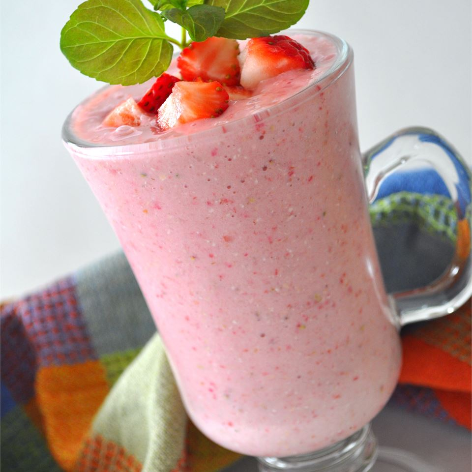

Strawberry Oatmeal Smoothie

The delicious brownie from the famous chef Paola Carosella
This is a fast smoothie with a deep pink color and a rich, creamy texture. Very filling, and perfect for people in a rush in the morning.
You don't have to give up a good breakfast when it's this fast to make!
Ingredients
- 1 cup soy milk
- 1/2 cup rolled oats
- 1 banana broken in chunks
- 14 frozen strawberries
- 1/2 teaspoon of vanilla extract
- 1 1/2 teaspoon of white sugar
Directions
- In a blender, combine soy milk, oats, banana and strawberries. Add vanilla and sugar if desired. Blend until smooth. Pour into glasses and serve.
Return to main page